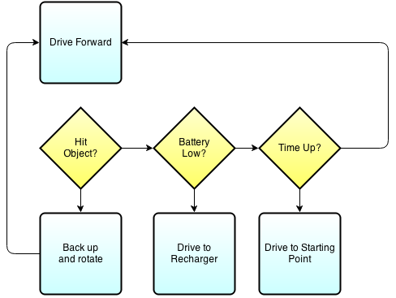

Learn how to get your Groovy on with Lego Mindstorms!
Created by Ryan Vanderwerf / @RyanVanderwerf - ReachForce
 +
+  = FUN!
= FUN!
About Me
- Chief Architect/Director @ ReachForce - we make B2 marketing data better www.reachforce.com
- Father of 2 girls under 10
- Co-Chair Austin Groovy and Grails User Group
- Co-Author of Effective Gradle Implementation Video Series on Packt
- I like to modify all the things (cars, home automation, phones, gadgets)
- Into lots of Devops/Linux stuff and AWS
What we will cover
- What is the EV3?
- What is leJOS?
- Layout and components of leJOS
- Programming Model
- How build components of leJOS with Gradle
- Overview of leJOS APIs
- Build and deploy a demo leJOS Groovy App
- More advanced topics - Sensors and Events
- WebRover 1 - Build, Run, and Play!
What is EV3?
EV3 is the latest generation LEGO Mindstorm Platform
TI ARM9 Core CPU (Runs ARMv5 instruction set)
64MB RAM
16gb internal flash
microSD slot
bluetooth wireless
usb port
New generation of 'smarter sensors' (single sensors replace many nxt ones)
One big difference vs Raspberry Pi is it is a ARM11 with ARMv7 instruction set with hardfp(w/jdk!)
Latest leJOS includes Raspberry PI support called 'Brick Pi'
What is leJOS?
leJOS is a Java-based implementation that started on the Lego Mindstorms RCX platform that runs on arm based processors. leJOS was forked oringally from the 'TinyVM' project in 2000.
Available in 3 flavors: RCX, NXJ, and EV3 that are all still maintained
What is LeJOS?
- Replacement firmware for building Lego Robots in Java
- PC Tools for flashing Lego Brick
- PC Apps to communicate to your robot from your PC via bluetooth, Wifi, USB
- Creates a running jar package to deploy on your robot for execution
Why no Groovy before now?
- Groovy was too slow before @CompileStatic (Soft FP)
- More limited audience
- Many Java people still not educated on Groovy(but this has grown!)
- leJOS didn't provide an easy way to run Groovy(core commiters indifferent to Groovy)
Layouts and components of leJOS
- OS Image - boot/busybox
- DBusJava - JNI classes for hardware
- EV3 Classes - Abstraction Java Classes
- EV3 Menu - long running process launches apps, remote connections
- Other components
OS Image
Runs minimal OS and kernel - only subset of basic shell options and commands available(busybox)
- shell is 'ash' nowhere near feature comparable to bash
- ps command only has 1 parameter 'w' for wide
- leJOS interacts with it by starting up a java app called 'EV3Menu'
- There isn't really enough RAM to run more than 1 VM besides what leJOS uses (hello oom killer!)
DBusJava
JNI Layer that interacts with physical hardware
- This is the glue to makes JVM classes work
- Generally you don't need to do anything with it unless you are adding unsupported hardware
- see the README file under DBusJava/src for how to add modules (outside scope of us here)
- Feel free to use the artifact on my Bintray account, compile your own with the scripts, or use your own artifact server
EV3Classes
Supporting Java classes for leJOS
- This is all the Java implementation classes for the system
- This is a monolithic code base/lib at this point all projects depend on this to work
- I've created some custom classes inside here to allow the Webrover to work (later)
- Divided into 4 sections - Hardware, Internal, Robotics and Utility
- Hardware - Java representation of the lego hardware items
EV3Classes
Hardware
- Support for Tetrix metal robots
- Supports motors from EV3, NXT, RCX, Mindsensors Glidewheel-M, regulated and unregulated
- Supports GPS with this device http://www.dexterindustries.com/dGPS.html
- Ports - these are there the low level devices sensors are connected to (Mostly I2C/UART)
- Sensors - supports over 40 different kinds of sensors from Lego, Dextor, HiTechnic and Mindsensors
- LocalEV3 is the singleton class to get access to things (show example in code)
- Basic hardware objects on EV3 brick itself are in lejos.hardware base pkg (Audio, LCD, buttons and keys)
EV3Classes
Internal
- Handles bluetooth pairing with DBusJava
- Internal EV3 implementation classes not part of public API
- Low level linux hardware access classes (NIO)
- If you use the classes they are subject to change without and kind of deprecation or notice
EV3Classes
Remote
- Mainly uses RMI
- RemoteEV3 is main classes to access remotely (give it IP address)
- Accessing hardware remotely pretty much as a 1:1 relation with 'Remote' in front of classs
- Wifi support most stable
- Bluetooth is working, but not considered as stable as Wifi (instructions differ per platform)
- When accessing ports, you must pass in the the proper 1 or 2 letter names (S[1-9] or letter A-F on motor ports
- Let's look at some RemoteEV3 code usage!
EV3Classes
Robotics
- The fun stuff! Doing something with all of these classes, sensors and motors
- filters - filters for sample providers such as SumFilter which takes the sum of samples over time, or MedianFilter
- geometry - geometric shape support using float co-ordinates
- localization - BeaconPoseProvider, CompassPoseProvider, MCLPoseProvider, OdometryPostProvider
- mapping - adds support for maps- Main class is EV3NavigationModel which takes Pilot, Navigator, PoseProvider, RangeScanner, FeatureFinder
EV3Classes
Robotics - continued
- navigation - classes for physically navigating the robot around - DifferentialPilot, SteeringPilot, OmniPilot
- object detection - Feature detector, Fusor detector, RangeFeature, and TouchFeature
- pathfinding - most of these use a map to determine a path for the robot to take (Dijkstra, Random, Shortest, Node)
- subsumption - Arbitrator and Behavior(Events)
EV3Classes
Utilities
- general utility classes - things like Timers, property mgt, delays, debugs
EV3Menu
This project keeps the JVM running, provides RMI services, WAP setup, UI on the front of the EV3 Brick
- Samples -> runs in separate jvm maps to /home/root/lejos/samples (Runs fine with @CompileStatic)
- Programs -> runs in separate jvm maps to /home/lejos/programs (Runs fine with @CompileStatic)
- Tools -> runs in same jvm maps to /home/root/lejos/tools (Runs Groovy fastest w/MOP)
Programming Model
Behavior Programming
- Why? Creates less spaghetti code of if-then-else statements
- Uses threads to keep multiple things going on to allow different 'behaviors' to react
- Interface uses only 3 methods - action, suppress, and takeControl
- Uses to main Interfaces - Behavior and Artibrator
Programming Model
Behavior Programming
Programming Model
Behavior Programming - continued
- Arbitrator takes over from your 3 behavior classes after they are complete
- Arbitrator regulates when behaviors become active
- Enter and escape will stop unless returnwheninactive is set upon creation
- Takes an array of behaviors
Programming Model
Behavior Programming - continued
- Simple to use, only method is start() - higher level behaviors suppress lower ones
- The array of behaviors passed in, index order determines priority of arbitrator to control behaviors
- Recommended design pattern - define boolean flag 'suppressed' for each behavior, set variable to true by supress method, test in each action method. first thing in action method is to set this to false
- Action must be coded for prompt exit from method
Programming Model
Behavior Programming - suppression

Programming Model
Let's show our example EV3BumperCarGroovy!
Advanced - Sensors and Events
Sensors

Advanced - Sensors and Events - Filters
Filters
Filters are used to alter a sample or alter the flow of samples
- Filters take a sample from a SampleProvider, modify it and then pass it on as a sample
- They are sample providers themselves
- Angles follow the right hand rule: This means that a counter clockwise rotation of a robot is measured as a positive rotation by the sensors on it
- On sensors that support multiple axes, like some gyroscopes and accelerometers, the axis order in a sample is always X,Y,Z
Advanced - Sensors and Events - Filter Sample
// get a port instance
Port port = LocalEV3.get().getPort("S2");
// Get an instance of the Ultrasonic EV3 sensor
SensorModes sensor = new EV3UltrasonicSensor(port);
// get an instance of this sensor in measurement mode
SampleProvider distance= sensor.getModeName("Distance");
// stack a filter on the sensor that gives the running average of the last 5 samples
SampleProvider average = new MeanFilter(distance, 5);
// initialise an array of floats for fetching samples
float[] sample = new float[average.sampleSize()];
// fetch a sample
average.fetchSample(sample, 0);
Advanced - Sensors and Events - Threads
Filters
Threads are spawned to facilitate:
- listeners
- regulated motors
- bluetooth
- timers
- navigation classes (Like NavPathController)
- On threads that don't need to terminate when program is done use setDaemon(true)
Advanced - Sensors and Events - Threads
Threads - example from startup menu
class Indicators extends Thread {
private boolean io = false;
public void ioActive() {
io = true;
}
public void run() {
String[] ioProgress = { ". ", " . ", " . " };
int ioIndex = 0;
boolean rewrite = false;
while (true) {
try {
if (io) {
StartUpText.g.drawString(" ", 76, 0);
ioIndex = (ioIndex + 1) % ioProgress.length;
StartUpText.g.drawString(ioProgress[ioIndex], 78, 0);
io = false;
rewrite = true;
} else if (rewrite) {
LCD.drawString(" ", 13, 0);
// invert when power is off
StartUpText.g.drawString(" BT", 82, 0, !StartUpText.btPowerOn);
StartUpText.g.refresh();
rewrite = false;
}
Thread.sleep(1000);
} catch (InterruptedException ie) {
}
}
}
}
//startup the code
Indicators ind = new Indicators();
ind.setDaemon(true);
ind.start();
Advanced - Sensors and Events
Listeners & Events
The listener thread supports Button Listeners & Sensor Port Listeners
- Button listeners are used to detect when a button is pressed, whatever your program is doing at the time
- To listen for a press of a specific button, you register as listener for that button
-
public class ListenForButtons { public static void main(String[] args) throws Exception { Button.ENTER.addButtonListener(new ButtonListener() { public void buttonPressed(Button b) { LCD.drawString("ENTER pressed", 0, 0); } public void buttonReleased(Button b) { LCD.clear(); } }); Button.ESCAPE.waitForPressAndRelease(); } }
WebRover1
Based off WebRover1 Project for NXT for International Space Apps Challenge 2013
Original version for NXT - had to rewrite a lot of it and switch to RMI for it to work with EV3
Allows you to simulate a remote rover type of device you could drive from far away like Mars or across the globe
WebRover1 - EV3
What is all if comprised of?
- Special RMIDifferentialPilot Class in the EV3Classes project
- Grails Application
- IP Camera App on Android or iOS via Wifi(Off the shelf)
- Javascript page with keybinding to actually input driving robot
WebRover1 - EV3
RMIDifferentialPilot
- RMI Enabled version of DifferentialPilot
- Pilot contains methods to control robot movements: travel forward or backward in a straight line or a circular path or rotate to a new direction
- Will only work with two independently controlled motors to steer differentially, so it can rotate within its own footprint
- Let's go over the code!
WebRover1 - EV3
Grails Application
- 2 Services, 2 Controllers, 1 GSP page
- 4 classes handle the robotics, brick abstraction, and remote comms
- Camera - using 'IP Webcam' free edition on Android
- Configure IP address of Camera and EV3 in Config.groovy before starting app
- Use the grails start/stop command interface to shut down app nicely, or you will have to keep rebooting the ev3
WebRover1 - EV3
Grails Application - Code Overview
- Camera Service - takes pictures and updates page to help you drive
- Robot Service - take input from GSP page to send commands to direct robott
- EV3Brick - abstraction class for robot, holds refs to motors
- EV3Robot - sets up comms and sensors references
- BasicRobot - bring Pilot, motors, and sensors together via RMI
- Let's look at the code and set yours up!
More Information
- leJOS Wiki: http://sourceforge.net/p/lejos/wiki/Home/
- leJOS Forums: http://www.lejos.org/forum/
- leJOS SD Card creation repo: https://sourceforge.net/p/lejos/ev3sdcard/ci/master/tree/
- leJOS EV3 Code Repo: https://sourceforge.net/p/lejos/ev3/ci/master/tree/
- Ryan's Fork w/Gradle support: https://sourceforge.net/u/ryanv78665/lejos/ci/master/tree/
- Gitub repo for WebRover1 EV3: https://github.com/rvanderwerf/webrover1
More Information - Buying parts
- You can buy random parts by the pound off ebay like this: http://goo.gl/xfkvtP (cheapest!)
- Lego Store (Many things often out of stock, poor supply chain?)
- Brickowl.com - reseller part search used and new
- Bricklink.com: http://www.bricklink.com/
- Amazon - specific parts are available there sometimes cheaper but less selection
THE END
I hope you have enjoyed the session!
Free free to contact me on twitter or google+ @RyanVanderwerf or email rvanderwerf@gmail.com